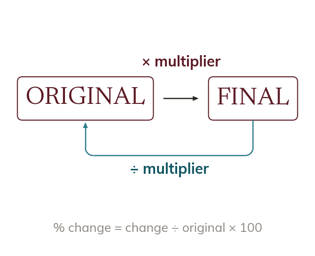

Diagnosing what's unknown before choosing a method
First decide which is unknown: the change, the original or the final amount. That choice decides the method.
Every percentage problem in this unit has three possible unknowns: the CHANGE (the increase or decrease itself), the ORIGINAL amount (before the change), or the FINAL amount (after the change). Which one is missing determines the method: if the final amount is unknown, multiply the original by the multiplier; if the original amount is unknown, divide the final amount by the multiplier (reverse percentage); if the percentage change itself is unknown, find (change / original) × 100. Reading a problem to identify which of the three is missing - before writing any calculation - is the single most useful habit in this unit.